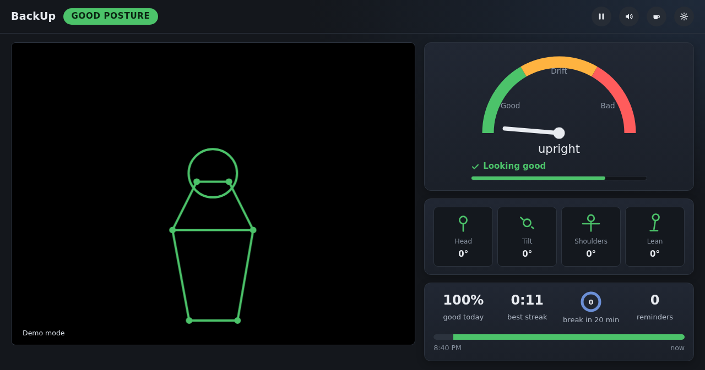

A private webcam posture coach
Posture to Die For.
Camera frames never leave this tab. Sponsor nudges never gate features.
BackUp is a wellness tool, not medical advice or a medical device. Do not hold a rigid posture. Stop and see a clinician if you have pain, numbness or dizziness.
chrome://settings/system, turn on Use graphics acceleration when available, click Relaunch, then check chrome://gpu.--ozone-platform=x11.about:config and set webgl.disabled to false.Or open the app: the webcam fallback and the demo both work without WebGL.
